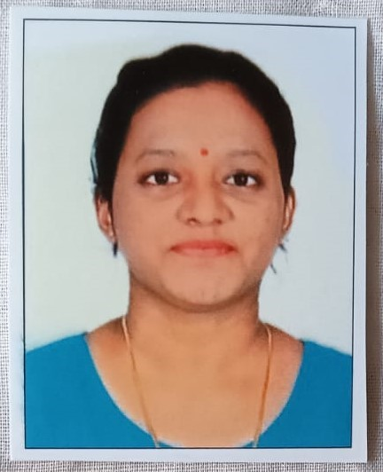

Chinmayee Menge

Junior Full-stack Web Developer
Mumbai, Maharashtra
chinmayeemenge24@gmail.com
+91 790011xxxx
GitHub Profile
LinkedIn Profile
Summary
Motivated aspiring Full-Stack Developer with background in import-export
operations and a strong passion for building web applications. Currently
developing skills in HTML, CSS, JavaScript, React, Node.js and SQL through
hands-on projects. Eager to apply problem-solving skills, continuous
learning, and creativity to contribute as a software developer.
Education
B.Sc. Information Technology | Patkar Varde College,
University of Mumbai
2020-2023 | CGPA- 7.4/10.0
Skills
Work Experience
Sales Co-ordinator in Import-Export | Bron Corporation BV | Jan 2026 - Present
- Track and monitor international shipments to ensure timely delivery.
- Process sales orders and support day-to-day logistics operations.
- Prepare and manage import/export documentation.
- Maintain operational records using Microsoft Excel.
- Coordinate with clients and internal teams regarding shipment status and documentation.
Sport Analyst | Hudl, India | Jun 2025 - Nov 2025
- Analyzed sports video footage to capture and record performance data.
- Maintained high accuracy while working within strict deadlines.
- Worked with digital tools to organize and validate match data.
- Demonstrated strong attention to detail and analytical thinking.
Office Assistant (Contract Base) | Fire Brigade, Marol | Jan 2025 - May 2025
- Assisted with documentation and administrative tasks.
- Maintained official records and supported daily office operations.
- Prepared and organized government-related documents.
- Worked efficiently in a structured administrative environment.
Freelance Legal Document Translator | Priya Translation Services | Jun 2023 - Jun 2025
- Translated legal documents, FIRs, and case papers with accuracy.
- Maintained confidentiality while handling sensitive information.
- Delivered assignments within deadlines.
- Ensured clarity and consistency in translated documents.
Across the Internet
GitHub Profile | Chinmayee Menge